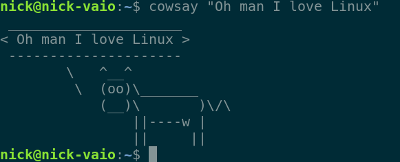

Fundamentos#
Este capítulo começa com o básico e cobre algumas informações e melhores práticas que todos que usam computadores regularmente se beneficiarão ao saber. Construiremos mais superpoderes com base nesta fundação nos capítulos posteriores.
Partes básicas dos computadores#
Os computadores trazem, manipulam e apresentam dados com velocidade relâmpago e quase nenhuma parte móvel. É por isso que eles tiveram um impacto tão grande em nossas vidas e trouxeram a era da informação. Para um pouco de contexto, aqui estão os componentes-chave nos computadores que realizam toda essa maravilha:
Componente |
Propósito |
|---|---|
Unidade Central de Processamento |
A CPU é o cérebro e faz a maior parte dos cálculos. Mais rápido é melhor, a velocidade é medida em bilhões de ciclos de computação por segundo (gigahertz). |
Memória (RAM) |
A memória de trabalho de curto prazo e de ação rápida; ela mantém os dados enquanto a CPU os processa. Mais é melhor, medida em bilhões de octetos de uns e zeros (gigabytes). |
Disco rígido |
A memória de longo prazo, mas mais lenta. Ela salva seus arquivos, fotos e planilhas. Também medida em gigabytes. |
Monitor |
Exibe informações visualmente. Em telefones, também é um dispositivo de entrada. Medido no número de elementos de imagem horizontais e verticais (pixels). |
Placa de rede |
Envia e recebe dados para/de outros computadores para postar fotos de gatos, etc. Medido em bilhões de uns e zeros comunicados por segundo (Gbps). |
Sistemas operacionais#
Quando um computador é ligado, uma série de operações simples embutidas são executadas para verificar o processador e a memória, e para descobrir qual outro hardware está conectado. Eventualmente, sistemas suficientes estão online para ler programas maiores e mais complexos do disco rígido. Em um sentido, o computador está se levantando por conta própria (daí o termo "inicialização"). Neste ponto, o computador encontrará um Sistema Operacional (SO) no disco rígido, que dirá ao computador como executar programas do dia a dia, como um pacote de escritório ou um navegador da web e tudo mais.
Existem muitos SOs por aí, mas vamos falar principalmente sobre três deles: Microsoft Windows, Apple macOS e Linux. Os dois primeiros são familiares para todos. O terceiro é um produto de código aberto (o que significa que está disponível para qualquer pessoa gratuitamente e que qualquer pessoa pode ver seu código-fonte subjacente) desenvolvido ao longo dos anos por uma comunidade de voluntários e profissionais. Linux é a tecnologia subjacente por trás do sistema operacional Android do Google e também executa muitos dos servidores que alimentam a internet. Nos últimos anos, mais pessoas começaram a usar Linux em seus laptops e desktops pessoais como uma alternativa poderosa, econômica, divertida e filosoficamente pura. Vamos nos esforçar para garantir que tudo discutido neste livro funcione bem em todos esses três SOs.
Arquivos e pastas#
Como você provavelmente sabe, a maioria dos sistemas de computadores armazena informações em uma estrutura hierárquica de pastas digitais aninhadas (também conhecidas como diretórios) no disco rígido. Você coloca suas fotos na pasta Fotos, e assim por diante. Você pode criar pastas e arquivos, excluí-los, renomeá-los, copiá-los, colá-los, etc.
Nota
Se você não está familiarizado com copiar/colar, você está prestes a se divertir. É um superpoder
central, mas você pode se beneficiar mais deste livro depois de aprender sobre isso. A página do WikiHow
sobre isso é fantástica. Eu também ficaria um pouco preocupado que este livro seja ligeiramente
avançado demais para você. Se você já conhece copiar/colar, mas não os atalhos de teclado
(Ctrl-C, Ctrl-V), saiba que esses atalhos são muito rápidos.
Todos nós já perdemos arquivos em pastas antes. Muitos de nós já abrimos um documento de e-mail e trabalhamos nele o dia todo apenas para fechar o editor e nunca mais encontrar o arquivo. Isso geralmente acontece quando ele é salvo em alguma pasta temporária onde arquivos baixados da internet vão. Eu mesmo já fiz isso muitas vezes e atendi dezenas de chamadas de ajuda de amigos ao longo dos anos devido a isso. A solução é o botão Salvar como, que é distinto de Salvar no sentido de que permite escolher onde salvar um arquivo em vez de apenas salvá-lo de onde foi aberto. Clique nele, navegue para um local normal como Documentos e salve lá. Problema resolvido!
Organizar pastas é uma batalha contínua para muitos de nós também. Tentamos dividir as coisas por
tipo de arquivo (Fotos, Documentos, Música) e depois por ano. Às vezes, para projetos de vários anos,
não vai bem e você pode precisar de uma pasta Projetos. É profundamente pessoal, então apenas
explore o que funciona melhor para você. Para fotos, um método interessante é
organizá-las por ano e depois nomear subpastas com o mês e então um número inteiro crescente e um evento, como 07.1 Quatro de Julho ou 12.4 Natal da Yodit
Suéter Festa. Os designers de sistemas operacionais estão frequentemente tentando
se afastar da estrutura hierárquica e usar tags (para que um arquivo possa ter várias
tags, semelhante a estar em várias pastas ao mesmo tempo), mas ainda não chegamos lá.
Backups#
Backups são realmente importantes, e eu não conheço muitas pessoas que os levam muito a sério além dos profissionais de TI. Eu pessoalmente sou realmente obcecado com minha coleção de documentos, fotos e músicas e ficaria arrasado se os perdesse em um incêndio, roubo, falha de hardware, pulso eletromagnético, terremoto, vulcão e/ou guerra nuclear. Mas mesmo eu não sou ótimo com backups. As principais categorias de perda de dados a serem protegidas são:
O hardware falha e os dados não podem ser recuperados
O hardware é roubado ou hackeado e não pode ser recuperado
O usuário (ou membro da família) exclui acidentalmente os dados
Uma solução razoável e fácil para backups é a nuvem, que discutiremos em breve.
Um método mais difícil de implementar, mas conceitualmente simples para dados de movimento lento é comprar dois discos rígidos USB externos com alguns terabytes de espaço. Copie todos os seus arquivos importantes para ambos. Leve um para o trabalho ou para a casa de um amigo ou algum outro local fora da sua casa. A cada mês ou seis meses ou sempre que (depende do seu ritmo de acumulação de novas coisas que você se importa), copie novos arquivos para eles e troque-os. Isso protegerá seus dados arquivais contra roubo e incêndio, mas não necessariamente contra terremotos ou EMPs. Para esses, você precisa de mais distância.
Claro, há o desafio de descobrir quais arquivos estão desatualizados e ter a disciplina para atualizar regularmente os backups. Descobrir isso e sincronizar rapidamente é o trabalho dos milhares de produtos de software de backup que você ouvirá no mercado. Claro, você poderia simplesmente copiar tudo todos os dias, mas isso levaria muito tempo e desgastaria seus discos. A maioria dos sistemas operacionais modernos, como Windows, Linux e macOS, vem com utilitários de backup. Experimente-os ou procure produtos comerciais de terceiros.
À medida que seus superpoderes digitais se desenvolvem, você se tornará conhecedor de alguns outros sistemas
que o levarão a opções de backup extremamente elegantes. git-annex é uma opção avançada
digna de nota que se baseia na ferramenta git que você aprenderá em
Programação. É bastante poderoso para manter backups bem organizados e
seguros. Para usuários científicos, de engenharia e de dados, a ferramenta datalad constrói
ainda mais sobre git-annex para adicionar reprodutibilidade em cima dos backups, para que seus resultados científicos
possam ser perfeitamente replicados por qualquer pessoa no futuro. Em particular, datalad
descobre automaticamente quaisquer arquivos de saída criados ao executar comandos específicos e rastreia o
entrada, comandos e saída.
Armazenamento Anexado à Rede (NAS)#
Não é incomum hoje em dia ter um NAS em casa. Estes são computadores/aparelhos leves contendo grandes discos rígidos que você pode conectar aos seus computadores domésticos. Fotógrafos e videomakers profissionais todos têm esses. Eles oferecem alguns benefícios em termos de compartilhamento de arquivos entre os computadores da família e em termos de confiabilidade dos dados (eles são frequentemente resilientes contra uma única falha de um disco rígido). Você pode comprá-los por algumas centenas de dólares ou, se você gosta do hobby, pode transformar um computador antigo em um NAS. PC Magazine (abençoe seus corações) faz uma revisão dos mais recentes e melhores NAS todos os anos, então confira para mais conselhos.
Aviso
NAS fornece algum nível de backup, mas eles não ajudam em caso de incêndios, roubos ou às vezes até exclusão acidental. Alguns produtos NAS vêm com software de backup bem polido que pode ajudar com seus backups fora do local.
Criptografia de Arquivos#
Se o seu telefone ou laptop for perdido ou roubado com todo o seu trabalho e namoro online nele, sem problema, certo? Porque você tem um backup? Ótimo trabalho! Mas você ainda pode se preocupar porque há muitas coisas pessoais e confidenciais na maioria dos dispositivos. É sábio manter seus assuntos privados em segredo, não importa se eles são apenas as receitas da sua mãe. Você TEM algo a esconder! Se alguém tiver acesso ao seu e-mail, por exemplo, ele pode redefinir sua senha do banco e causar todo tipo de confusão. Então, vamos apenas esconder seus dados.
Criptografia é o processo de embaralhar os bits no seu disco rígido de tal forma que mesmo que alguém roube o computador/telefone, ele não será capaz de acessar as informações nele. Sem criptografia, um bandido ou adolescente aleatório poderia simplesmente conectar um cabo e ver todas as suas informações. Matemática para o resgate!
Opções para criptografar seus discos rígidos em diferentes sistemas:
Tipo de computador |
Opções de criptografia |
|---|---|
Windows |
Encontre o programa BitLocker e ative a criptografia de disco completo |
PC Linux |
Escolha criptografar todo o disco durante a instalação. |
Mac |
Encontre o utilitário FileVault e configure-o para criptografar o disco completo |
Telefone Android |
Procure nas configurações por “Criptografia” e certifique-se de que está ativada. Se não estiver, ative. Certifique-se de definir um PIN forte ou outra credencial |
iPhone |
Quase sempre criptografado por padrão; defina um PIN forte |
Aviso
Se você criptografar algo e depois esquecer a senha, seus dados serão muito difíceis de recuperar (por design, afinal esse é o objetivo). Esperamos que você tenha um backup! Isso parece óbvio, mas é um pouco assustador. Apenas tenha cuidado.
A Nuvem#
A Nuvem é um termo nebuloso que realmente significa “uma grande coleção semi-automatizada de quase computadores idênticos na internet que é operada por alguma empresa.” Muitos cálculos estão se movendo para A Nuvem por causa das eficiências de escala inerentes aos mega-operadores como Amazon Web Services. O acordo que A Nuvem oferece aos novos proprietários de negócios é que eles lidarão com o incômodo de adquirir, manter e atender os computadores, permitindo que você se concentre em software, marketing e usuários. Em outras palavras, você faz o que você faz. Se você se sair muito bem e precisar de 10.000 novos computadores agora, eles clicam em um botão e (bloop-bleep) está feito. Se você errar e todos começarem a excluir suas contas no seu serviço, (bleep-bloop) esses computadores não estão mais reservados para você. Que acordo! Serviços como Netflix e Uber rodam em back-ends baseados em nuvem operados por outras empresas, como Amazon, Google ou Microsoft.
O que isso significa para você? Muitos serviços oferecem a capacidade de sincronizar automaticamente arquivos no seu disco rígido com os discos rígidos deles na nuvem (via placa de rede). Isso é bom porque quando você tira uma foto no seu telefone, ela aparece no seu computador. Se você sofrer um tsunami, qualquer coisa que foi sincronizada na Nuvem longe sobreviverá e se sincronizará novamente quando você conseguir um novo computador.
Serviços como Dropbox, OneDrive da Microsoft e iCloud da Apple fazem isso. Se você não estiver interessado em executar seu próprio servidor ou lidar com seus próprios backups, eu tenho que recomendar o uso desses serviços. O risco, como sempre, é que você tem que confiar neles, porque eles podem ver todos os seus arquivos. Além disso, com sistemas de computador sendo tão complexos, eles sempre têm alguma nova vulnerabilidade grave, então provavelmente é apenas uma questão de tempo até que esses serviços sejam violados. Nesse ponto, os maiores serviços serão o alvo mais provável. Por outro lado, eles provavelmente também têm as melhores defesas. Apenas algo para pensar.
É a mesma história com e-mail. Se você usar um sistema de e-mail baseado na web na nuvem, pode simplesmente fazer login a partir do computador de qualquer pessoa e tê-lo.
A linha de comando#
Vastos superpoderes de computador são controlados por uma janela um tanto obscura em seu computador:
A Linha de Comando (ou Terminal). Vá para o seu computador e inicie-o. No Windows, clique em
Iniciar e digite cmd e clique em Linha de Comando quando você o vir (ou apenas pressione
enter). No macOS, vá para o Finder e clique em Ir → Utilitários → Terminal.
No Linux, basta pressionar Ctrl-Alt-T. Uma pequena caixa aparecerá com um cursor piscando
ameaçadoramente. Isso é tudo. Essa é a linha de comando. Você está espiando em um universo de
possibilidades, como em Homens de Preto quando eles olham para o colar do gato e é uma
galáxia inteira.
A ideia aqui é que você digita comandos e ele responde fazendo algo. Esses comandos são precisos, expressivos e repetíveis; você pode dizer ao computador exatamente o que deseja e ele fará isso. Como você verá nos capítulos posteriores, isso pode ser significativamente mais rápido do que apontar e clicar, especialmente para ações repetidas. Em outras palavras, um comando vale mil cliques.
Mais importante, centenas de superpoderes de grande impacto estão escondidos em pequenas e simples utilidades de linha de comando, a maioria das quais está disponível gratuitamente. O benefício do design elegante que levou à existência dessas ferramentas ricas é um de reducionismo: muitas operações complexas podem ser decompostas em uma série de operações simples. Por exemplo, considere um verificador ortográfico do ponto de vista de um desenvolvedor de software. Se ela escreve um processador de texto e precisa de verificação ortográfica, ela pode escrever um verificador ortográfico inteiro além do processador de texto, OU rezar para que alguém já tenha feito um verificador ortográfico antes e o tenha disponibilizado para ela usar. Como se vê, há de fato uma biblioteca de verificação ortográfica e utilitário disponível nesse sentido e ele tem uma interface de linha de comando. Milhares de tais blocos de construção existem, e todos eles estão disponíveis para você agora através da linha de comando.
Há uma reputação de que a linha de comando é apenas para usuários "avançados". Eu não acho que isso seja verdade de forma alguma, e espero poder convencê-lo de que é acessível e útil para todos. Vamos usar a linha de comando com bastante frequência neste livro.
Nota
Quando você ler algo como "Digite isso" a partir de agora, e não estiver claro onde digitar, é muito provável que seja na linha de comando.
Vamos digitar alguns comandos para ver que é divertido e fácil.
Operação |
Windows |
Linux/macOS |
|---|---|---|
Em qual pasta estou? |
|
|
Quais arquivos existem nesta pasta? |
|
|
Mover para cima uma pasta na hierarquia |
|
|
Voltar para a pasta original, |
|
|
Imprimir a hora e data atuais |
|
|
Imprimir o tempo de atividade do computador |
|
|
Criar uma pasta |
|
|
Remover uma pasta |
|
|
Converter unidades |
|
|
Fazer uma vaca dizer algo |
N/A :( |
|
Aquele último não é uma piada.
Alguns comandos vêm com um SO e outros precisam ser instalados de terceiros. Os dois
últimos exemplos acima são do último caso, e a instalação de units é discutida
em Conversão de unidades, então você terá que esperar até lá para experimentar esse comando.
Aqui estão alguns aprimoradores de produtividade na linha de comando:
Se você quiser recuperar o comando anterior novamente (para executá-lo novamente ou modificá-lo levemente e depois executá-lo novamente), pressione a seta para cima no seu teclado. Cada vez que você pressiona, ele sobe em um histórico de todos os comandos que você executou. A seta para baixo vai na outra direção.
Se você estiver digitando um comando, muitas vezes pode pressionar
TABpara completá-lo automaticamente. Por exemplo, se houver uma pasta chamadameu_nome_de_pasta_muito_longo, você pode simplesmente digitarcd meu_nomee depois pressionarTABe ele preencherá o restante. Isso é chamado de completar com tabulação. Eu fico muito incomodado e depois falo quando as pessoas não usam porque isso pode economizar horas por dia quando você está trabalhando intensamente na linha de comando.Você pode copiar e colar comandos na linha de comando.
Pelo menos no Windows, você pode arrastar um arquivo para a linha de comando em vez de digitar seu caminho completo.
Se você já digitou um comando que está demorando muito ou não é o que você queria, você pode abortá-lo pressionando e segurando a tecla CTRL e depois pressionando C.
Programas e gerenciadores de pacotes#
Seu computador sem dúvida veio com alguns programas, e você provavelmente baixou e instalou outros. Era uma grande dor sair e encontrar/instalar as últimas versões de vários programas e mantê-los atualizados. No mundo Linux, isso foi resolvido há anos com programas especiais chamados Gerenciadores de pacotes, que são comandos simples que sabem como encontrar, baixar, instalar, manter atualizados e (se desejado) desinstalar programas. macOS e Windows começaram a se atualizar e agora existem bons gerenciadores de pacotes para eles também. Sem mais delongas, é hora do seu próximo superpoder: gerenciamento de pacotes!
Nota
Isso é opcional, mas tornará mais fácil seguir em seções do livro que dependem de programas especiais. Em todos os usos futuros, você pode alternativamente procurar o programa em questão, encontrar sua página na web, baixá-lo e executar seu instalador.
Aviso
Esses programas mudam o que está no seu computador (esse é o ponto). É improvável, mas possível, que algo dê errado. Experimente-os em um computador que você possa se dar ao luxo de quebrar se estiver apenas aprendendo.
macOS tem um gerenciador de pacotes padrão chamado Homebrew que pode ser instalado a partir da linha de comando executando o seguinte comando (que também está na página deles se você quiser copiar/colar):
/usr/bin/ruby -e "$(curl -fsSL https://raw.githubusercontent.com/Homebrew/install/master/install)"
Um bom gerenciador de pacotes chamado Chocolatey está disponível no Windows. Para obtê-lo, você deve
abrir o Prompt de Comando com privilégios Administrativos, o que significa que os comandos que você digita podem
alterar as configurações do sistema. Você geralmente faz isso digitando cmd no Menu Iniciar e
clicando na opção que tem a palavra "Administrador" nela (ou clicando com o botão direito na
opção normal do Prompt de Comando e escolhendo "Executar como Administrador"). Uma vez que você está dentro,
copie/cole o comando mostrado em https://chocolatey.org/install nele e pressione
Enter para executá-lo (é simplesmente muito longo para razoavelmente colocar neste livro esperando que você
o digite). Você pode ter que clicar com o botão direito e escolher Colar para colar, ou (no Windows)
basta pressionar Control-V.
{kind=link}
Abrindo a Linha de Comando do Administrador no Windows 10 (passe o mouse e
clique com o botão direito, depois clique com o botão esquerdo na opção Administrador). Você geralmente tem que usar
a opção Administrador toda vez que executar um comando choco.#
Agora você tem um gerenciador de pacotes e pode instalar programas comuns com comandos simples! Os comandos serão semelhantes ao que é mostrado abaixo. Forneceremos tabelas semelhantes frequentemente.
SO |
Comando |
|---|---|
Windows |
|
Linux |
|
macOS |
|
Após emitir um comando como esses, pode haver alguns prompts e alertas que passam enquanto
os pacotes são baixados e instalados. Em alguns casos, se as coisas parecerem congeladas, você pode
ter que simplesmente pressionar Enter (tive que fazer isso no choco algumas vezes). Se você instalar um
pacote grande, o processo pode levar alguns minutos, dependendo da velocidade da sua conexão com a internet.
Nota
No Windows com choco você tem que executar refreshenv ou abrir um novo
terminal de comando após instalar um programa antes que ele esteja disponível como um novo programa de linha de comando.
Você pode desinstalar qualquer coisa instalada por meio desses sistemas com a mesma facilidade
executando o mesmo tipo de comando, mas com uninstall ou remove em vez de install. E você
pode update também.
A vida já está ficando mais fácil! Vamos colocar essa nova habilidade em prática.
Gerenciadores de senhas#
Você conhece aquela sensação quando está tentando comprar algo e a página da web obriga você a criar uma nova conta? Muitos de nós simplesmente reutilizamos a mesma senha antiga repetidamente, talvez com algumas modificações com base no nome do site. Isso acaba sendo realmente perigoso além de irritante porque a probabilidade de que a Pizzaria do Arnold tenha práticas de segurança sólidas é baixa, e depois de dar (aproximadamente) a mesma senha para um bilhão de tais estabelecimentos, a probabilidade de algum hacker nefasto invadir eles e obter sua senha se aproxima de 100%.
Irritante e perigoso!? Esperamos que haja um superpoder para isso. De fato, existe: Gerenciadores de Senhas. Gerenciadores de senhas são programas que você executa no seu computador ou telefone que fazem duas coisas essenciais:
Eles atuam como seu próprio cofre pessoal criptografado de senhas para que você possa consultá-las facilmente quando precisar
Eles têm geradores de senhas aleatórias que criarão uma senha de 25 caracteres sempre que você precisar de uma nova para a Pizzaria do Arnold ou similar
Se você usar uma senha única e aleatória para tudo, a ameaça discutida acima é neutralizada. Além disso, você não precisa digitar a senha nunca, os Gerenciadores de Senhas permitem que você a copie e depois a cole direto no formulário da web. Nesse fluxo de trabalho, você nunca realmente conhece a maioria das suas senhas.
Dica
Você ainda precisará memorizar algumas senhas-chave para contas muito importantes. Apenas mantenha-as únicas. Veja Criando senhas seguras, mas memorizáveis com Diceware abaixo para maneiras de fazer isso bem.
Existem alguns ótimos gerenciadores de senhas de código aberto por aí, como KeePassXC, bem como ofertas comerciais (com melhor suporte), como LastPass ou 1Password. Uma boa combinação é colocar seu banco de dados KeePassXC em um programa de sincronização na nuvem para que ele sincronize em todos os seus dispositivos.
Para experimentar o KeePassXC com um gerenciador de pacotes (veja acima), execute o seguinte na Linha de Comando:
SO |
Comando |
|---|---|
Windows |
|
Linux |
|
macOS |
|
Você também pode querer armazenar cartões de crédito no seu gerenciador de senhas, tornando muito fácil copiá-los/colá-los em formulários da web ao fazer compras.
Claro que há uma nova ameaça agora: se alguém descobrir a única senha que você usa para seu gerenciador de senhas e tiver acesso aos seus arquivos, ele pode obter todas as suas senhas de uma vez. Isso é menos provável de acontecer, mas você deve considerar isso ao digitar sua senha mestre no gerenciador de senhas. Lembre-se de que Edward Snowden coloca um cobertor sobre sua cabeça sempre que digita uma senha, e ele é alguém que sabe o que está acontecendo por aí.
Dica
Sua senha no trabalho expira automaticamente a cada poucos meses? As empresas costumavam pensar que isso era bom para a segurança, mas em 2016, o NIST lançou diretrizes dizendo que a expiração automática desnecessária estava levando as pessoas a escolher senhas fracas. Agora eles recomendam apenas forçar alguém a mudar uma senha se houver evidências de uma violação de dados. O mesmo com a complexidade da senha (não é mais sábio exigir misturas de maiúsculas e símbolos), basta fazer uma senha longa e verificá-la contra uma lista de senhas comuns.
Criando senhas seguras, mas memorizáveis com Diceware#
Para as poucas senhas muito fortes que você precisa memorizar, o método Diceware está aqui para ajudar. Aqui estão os passos:
Obtenha uma lista de palavras Diceware como uma destas da EFF. Estas têm 5 dígitos entre 1 e 6 (para cada valor possível de um dado). Aqui está um trecho:
46663 reflexo 46664 refluxo 46665 refocar 46666 dobrar 51111 reflorestar 51112 reformatar 51113 reformado 51114 reformador
Consiga 5 dados e role-os. Alinhe-os e depois procure a palavra que corresponde aos valores que você rolou (se você teve 4, 6, 6, 6, 4, sua primeira palavra seria
refluxo, da lista acima).Role de 4 a 7 vezes mais. Agora você tem de 5 a 8 palavras aleatórias. Junte-as e essa é sua senha supersegura, mas ainda memorizável.
Nota
Não tem 5 dados por aí? Você pode encontrar geradores online de senhas diceware. Apenas saiba que eles não são aleatórios o suficiente e o método Diceware recomenda não usar nada além de dados reais. Além disso, todos deveriam ter alguns dados por aí para jogar 10.000 [1].
Autenticação de dois fatores#
Autenticação de dois fatores (2FA) é um método de login oferecido por muitas páginas da web e instituições hoje em dia. Isso faz com que você tenha que digitar uma senha e também digitar um código único enviado para o seu telefone via texto ou através de um aplicativo especial. A ideia aqui é combinar algo que você sabe (sua senha) com algo que você tem (seu telefone). É semelhante a digitar seu código postal na bomba de gasolina ao usar um cartão de crédito [2], ou um PIN com um cartão de ATM. Para suas contas mais importantes, é realmente essencial ativá-lo para minimizar a probabilidade de alguém acessá-las. Bancos, grandes sites de compras e provedores de e-mail são bons primeiros lugares para começar. Você pode aprender como ativá-lo com uma pesquisa na web do tipo:
ativar [nome da página da web] autenticação de dois fatores
Os novos riscos aqui são que leva mais tempo para fazer login e, se você perder seu telefone, é extra difícil apenas redefinir sua senha. Esses são os trade-offs. Muitas empresas estão relaxando a dor exigindo que você use o código 2FA apenas em novos computadores, então não é tão ruim. Outras empresas fazem você obter e inserir um token 2FA duas vezes por transação, o que é realmente irritante.
Aviso
Receber tokens 2FA por mensagens de texto é provavelmente melhor do que nada, mas é significativamente menos seguro do que usar um aplicativo 2FA dedicado. Por quê? Porque é possível para um bandido usar engenharia social para convencer seu operador de telefone a mudar seu número de telefone para um cartão SIM diferente, permitindo assim que eles acessem seus tokens 2FA e entrem em suas contas. Isso aconteceu em ataques sérios, como um na CloudFlare em 2012. É muito mais difícil para eles acessarem um aplicativo no seu telefone.
Golpes comuns#
Bilhões de dólares são perdidos a cada ano devido a fraudes, muitas das quais ocorrem em computadores. Você deve sempre ser um pouco cético se alguém que você não conhece pedir para pagar por algo ou dar acesso. Aqui estão algumas diretrizes para evitar fraudes.
Nunca dê sua senha
Nenhuma entidade bem-intencionada jamais pedirá sua senha por telefone ou e-mail ou em qualquer outro lugar que não seja um formulário de login. Se isso acontecer com você, você deve reconhecer isso como um grande sinal de alerta.
Grandes emperesas de computador nunca ligarão para você
Existem muitos golpes onde as pessoas fingem estar ligando de uma grande empresa que você já ouviu falar, oferecendo-se para consertar algo no seu computador se você apenas acessar um certo link. Esta é uma tentativa de acessar seu PC para encontrar informações bancárias sobre você. Desligue!
E-mails onde as pessoas sabem uma senha antiga sua não têm um vídeo comprometedor seu
Ao longo dos anos, várias empresas sofreram violações de dados. Se você tinha uma conta com qualquer uma delas com uma senha fraca (ou seja, uma única palavra do dicionário), elas podem enviar um e-mail dizendo que sabem sua senha e afirmar que invadiram seu computador e gravaram você fazendo algo nu ou privado. Eles ameaçam enviar para todos seus amigos se você não enviar cerca de R$ 1000,00 via Bitcoin. É muito improvável que eles tenham algo sobre você, já que essas violações estão amplamente disponíveis. Se você usou essa mesma senha em outras contas, você precisa mudá-la, tipo, ontem. Veja https://haveibeenpwned.com/ para ajuda em verificar quais contas suas foram comprometidas em violações conhecidas.
Se alguém disser que você está com um grande problema eles podem ajudar, provavelmente é um golpe
Você pode receber uma ligação dizendo que tem dezenas de violações não pagas na sua cudade, mas se você for até a um posto e conseguir R$ 200,00 em créditos de celular e lê-los um após o outro para essa pessoa no telefone, eles vão te tirar disso. Isso é um golpe. Creditos de celular são muito difíceis de rastrear e são um instrumento favorito dos golpistas. Se você estiver realmente em apuros, lide com isso pelos canais adequados e contrate um advogado. Isso acontece com pessoas se passando por auditores da Receita Federal também. Eles podem saber um pouco sobre você, como onde você mora e alguns endereços anteriores. Tudo isso é registro público, mas torna o golpe mais real. Não caia nessa. Se você estiver realmente inseguro, peça o número da instituição deles, verifique online e depois ligue de volta.
Cuidado com phishing - pescaria
Phishers enviarão um e-mail que parece ser de uma instituição familiar. Ele terá os logotipos corretos, o endereço certo e um link que você pode clicar para fazer algo importante, como redefinir uma senha ou confirmar algo. A melhor defesa aqui é passar o mouse sobre o link e verificar na barra de endereços (geralmente na parte inferior da tela) para ver para onde o link está realmente indo. Se for para algum endereço estranho na internet ou um erro de ortografia do site real, é um golpe. Se você clicar no link, também pode verificar a barra de endereços do navegador. Tenha cuidado, eles podem ser muito traiçoeiros. Isso tem sido um problema tão grande que seu empregador pode contratar alguém para enviar mensagens semelhantes a phishing para você e, se você clicar nelas, terá que fazer um treinamento obrigatório. É como um phishing anti-phishing.
Ransomware é real
Se você receber uma mensagem de que todos os seus arquivos estão criptografados e você precisa pagar para obtê-los descriptografados, pode ser real; especialmente se você não conseguir acessar seus arquivos. Idealmente, você terá um backup de seus arquivos e poderá simplesmente limpar seu computador e restaurar o backup. Caso contrário, você terá que escolher se quer dar ao criminoso o que ele quer ou se despedir de seus arquivos. Outro bom motivo para ter backups!
Esses são apenas alguns. O FBI tem centenas mais para ficar de olho em https://www.fbi.gov/scams-and-safety/common-fraud-schemes.
Bem, isso resume o capítulo um. Espero que você tenha aprendido algo novo e útil.
Notas de rodapé